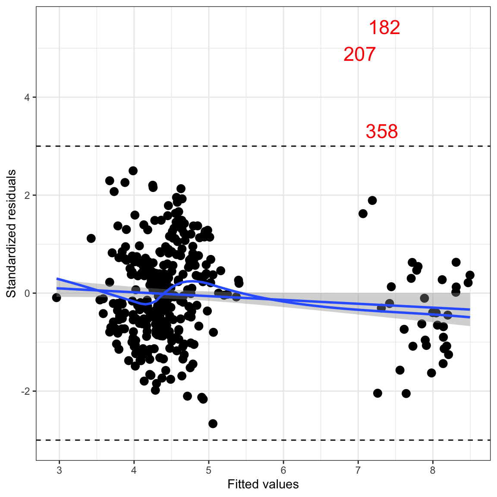
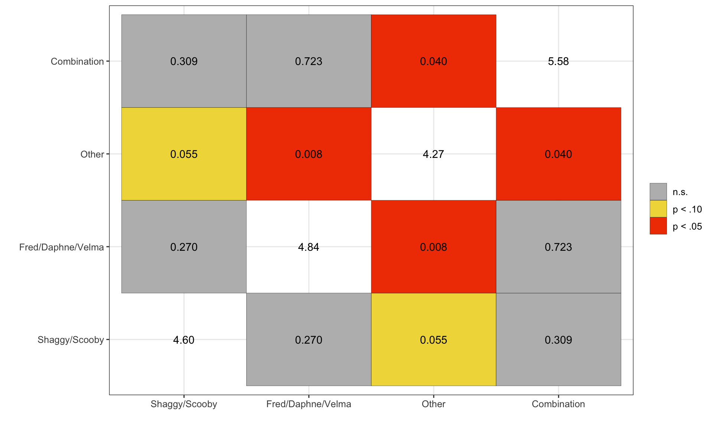

1. Create a table of pairwise correlations between engagement, each of the four dummy variables you created to represent caught_by, IMDb rating, number of catchphrases uttered, and the media format dummy variable.
Intercorrelations between eight measures collected from Scooby-Doo TV
episodes and movies.
Measure
1
2
3
4
5
6
7
8
1. IMDb Engagement
—
2. Shaggy/Scooby
-.07
—
3. Fred/Daphne/Velma
.07
-.63
—
4. Other
-.14
-.35
-.32
—
5. Combo
.18
-.23
-.22
-.12
—
6. IMDb Rating
-.24
-.09
.18
.01
-.16
—
7. Catchphrase
.36
.12
-.08
-.14
.12
-.30
—
8. TV
-.77
.04
.04
.04
-.21
.56
-.42
2. Interpret (i) the correlation between the Shaggy/Scooby dummy variable and engagement, and (ii) the correlation between the Shaggy/Scooby dummy variable and the media format dummy variable.
The correlation between Shaggy/Scooby and IMDb engagement is \(-0.07\). This indicates that episodes/movies in which Shaggy and Scooby-Doo catch the villain have, on average, lower levels of IMDb engagement than other episodes/movies. (Although this is small.)
The correlation between Shaggy/Scooby and TV is 0.04. This indicates that when Shaggy and Scooby-Doo catch the villain, on average, it is more likely to be in a TV episode.
4. Which conditions of caught_by, if any, differ from Shaggy/Scooby in the average engagement on IMDb produced (more than we expect because of sampling variation)? Explain.
When a combination of Mystery Inc. characters catch the villain, the average IMDb engagement differs from that when Shaggy and Scooby-Doo catch the villain, more than we expect because of sampling variation (\(p = 0.0004\)), after controlling for the other predictors in the model.
5. Report and interpret the \(R^2\) value for this model.
Differences in who catches the villain explain 5.29% of the variation in IMDb engagement.
6. Which comparisons of the caught_by condition reflected in the omnibus null hypothesis are not represented in this fitted model?
There are three comparisons not represented in this fitted model. They include:
Fred/Daphne/Velma vs. Other
Fred/Daphne/Velma vs. Combination of Mystery Inc. characters
8. Which conditions of caught_by, if any, differ from Shaggy/Scooby in the average IMDb engagment (more than we expect because of sampling variation) after controlling for differences in these other predictors? Explain
When a people other than Mystery Inc. characters catch the villain, the average IMDb engagement differs from that when Shaggy and Scooby-Doo catch the villain, more than we expect because of sampling variation (\(p = 0.028\)), after controlling for the other predictors in the model.
9. Report and interpret the \(R^2\) value for this model.
Differences between which Mystery Inc. members caught the villain, IMDb rating, number of catchphrases uttered, and media format explain 66.5% of the variation in IMDb engagement.
Assumptions
10. Create the density plot of the marginal distribution of the standardized residuals from the ANCOVA model. Add the confidence envelope for the normal distribution. Explain whether or not this plot suggests problems about meeting the normality assumption.
Figure 1: Density plot of the standardized residuals. A confidence envelope assuming the distribution is normally distributed is also included.
Based on the plot, the normality assumption looks tenable. The density curve for the distribution of standardized residuals falls within the confidence envelope of where we would expect if they were normally distributed.
11. Create the scatterplot of the standardized residuals versus the fitted values from the ANCOVA model. Include any smoothers and confidence envelopes that will allow you to evaluate the linearity assumption. In the plot identify observation with extreme residuals (\(\leq-3\) or \(\geq3\)) by indicating the row number of that observation in the plot.

Figure 2: Scatterplot of the standardized residuals versus the fitted values. The line \(y=0\) and the confidence envelope showing the expected uncertainty from that line are also displayed on the plot, along with a loess smoother. Observations with a standardized residual more than three standard errors from 0 are also identified by their row number in the data.
12. Explain whether or not this plot suggests problems about meeting the linearity and homogeneity of variance assumptions.
The linearity assumption seems somewhat satisfied as loess smoother mostly falls within the confidence envelope of the \(Y=0\) line. There are a couple places on the plot where the mean residual differs from zero more than we would expect because of sampling variation. The homoscedasticity assumption seems untenable. Including the extreme observations, the variation in the standardized residuals at low fitted values is lower than the variation in the standardized residuals for higher fitted values.
Pairwise Differences
13. Create a table (suitable for publication) that presents each of the possible pairwise contrasts (hypothesis) of interest, the unadjusted p-values, and the Benjamini–Hochberg adjusted p-values for the controlled differences. (Note: To obtain all of these, you may need to fit additional models.)
Contrast
p-Value
Adjusted p-Value
Shaggy/Scooby-Doo vs. Fred/Daphne/Velma
0.180
0.270
Shaggy/Scooby-Doo vs. Other
0.028
0.055
Shaggy/Scooby-Doo vs. Combination
0.257
0.309
Fred/Daphne/Velma vs. Other
0.001
0.008
Fred/Daphne/Velma vs. Combination
0.723
0.722
Other vs. Combination
0.013
0.040
14. Use the Benjamini–Hochberg adjusted p-values from the controlled model to help answer the research question: Are there differences in the engagement level of reviewers on IMDb for Scooby-Doo episodes/movies based on which members of Mystery Inc caught the villain? In answering this question, also indicate how IMDb engagement differs for the conditions of caught_by.
Based on the Benjamini–Hochberg adjusted p-values, there are differences in the average IMDb engagement between Scooby-Doo episodes/movies in which Fred/Daphne/Velma catch the villain and those in which non-Mystery Inc. members catch the villain (\(p=.008\)), after controlling for the other predictors in the model. There are also differences in the average IMDb engagement between Scooby-Doo episodes/movies in which non-Mystery Inc. members catch the villain and a combination of Mystery Inc. members catch the villain (\(p=.040\)), after controlling for the other predictors in the model.
15. Create a heatmap of the Bonferroni p-values for the controlled model that you reported in the table in Question 13. You can see an example of a heatmap for correlations here. We want to create a heatmap that shows the p-value for each mean comparison instead of the correlation between variables. So for example, the heatmap we want to create should be a 5x5 grid (the rows and columns would represent states) and the intersecting cells would include the p-value for the comparison (rather than the correlation coefficient). Color will be used to indicate the magnitude of the p-values. You may want to include different levels of color depending on the degree of significance (\(< .05\), \(< .01\), etc). Feel free to use any software tool you want to create this heatmap.

Figure 3: Heatmap showing the p-values and significance level of the Benjamini-Hochberg adjusted \(p\)-values for comparisons of IMDb engagement between each condition of \(\mathtt{caught\_by}\). The average IMDb engagement for each condition is shown along the main diagonal.
{kind=link}